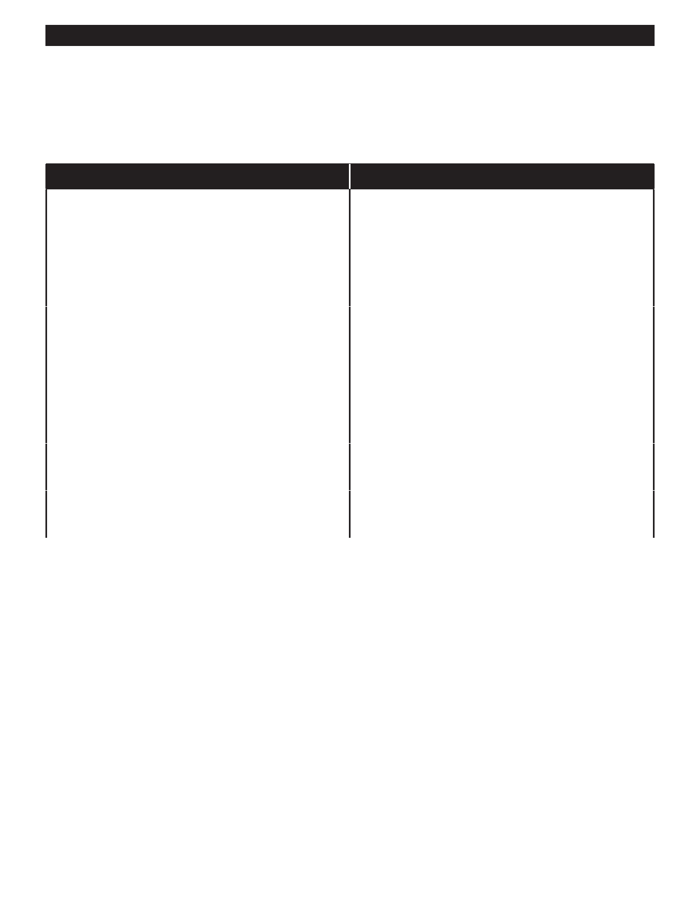

PA RT I C I PA N T R E S O U R C E G U I D E
Common Problems and Solutions
Because they are simple in operation, fluorescent lighting systems are easy to diagnose
and fix.
Problem
Solution(s)
Light is reduced or flickers.
Move tube in socket so pins sit snugly in sockets.
Replace tube or tubes. (Page 67) Make sure bulb does
not exceed wattage rating of fixture. (If it is an older
fluorescent light fixture, also replace the starter.)
Replace the ballast. (Pages 68-69)
Replace the light fixture. (Pages 70-71)
Light does not go on.
Test and replace wall switch. (Pages 37-43)
Move tube in socket so pins sit snugly in socket.
Replace tube or tubes. Make sure bulb does not
exceed wattage rating of fixture. (Page 66) (If it is an
older fluorescent light fixture, also replace the starter.)
Replace the ballast. (Pages 68-69)
Replace the light fixture. (Page 70-71)
Black material around ballast.
Replace the ballast. (Pages 68-69)
Replace the light fixture. (Pages 70-71)
Humming sound from light fixture.
Replace the ballast. (Pages 68-69)
Replace the light fixture. (Pages 70-71)
Important: Fluorescent tubes should not be broken or damaged. They contain mercury, which is a hazardous
waste. Properly dispose of worn-out fluorescent tubes. (Check with the Environmental Protection Agency, your
local government, or the health department for disposal instructions.)
66